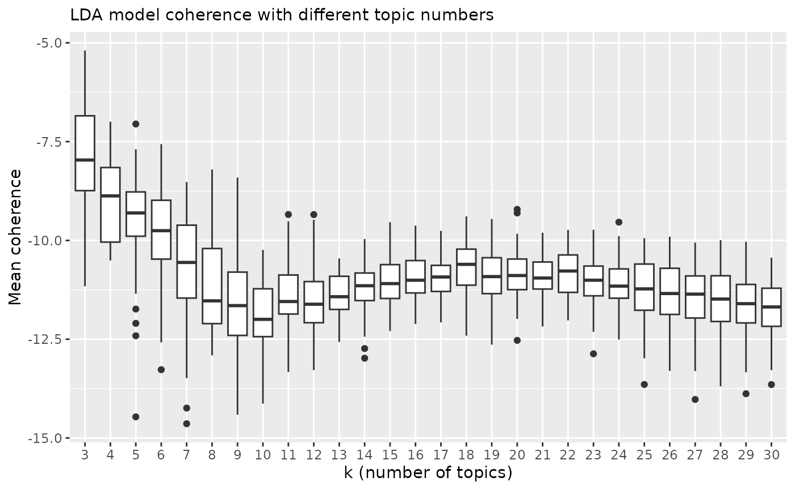
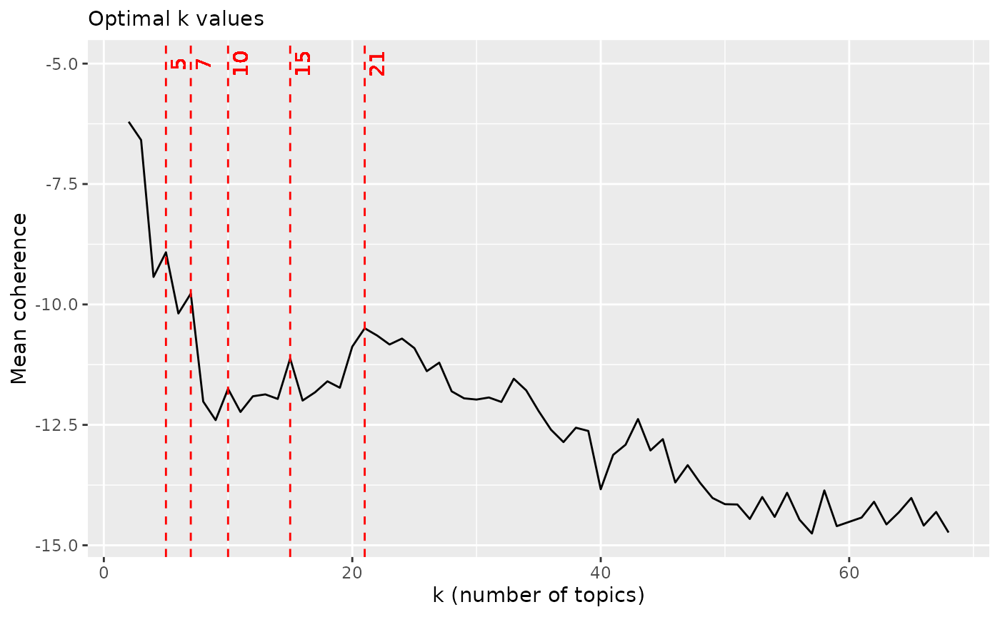

Topic modeling with latent Dirichlet allocation (LDA). Finding optimal k-parameter. Using coherence score as a value of goodness.
library(rfintext)
library(quanteda)
library(tidytext)
library(topicmodels)
library(topicdoc)
library(dplyr)
library(ggplot2)
library(doFuture)
plan(multisession)
dtm <- aspol |>
preprocess_corpus() |>
corpus_to_dtm(kunta, LEMMA)
dtm
#> Document-feature matrix of: 68 documents, 3,061 features (76.78% sparse) and 0 docvars.
#> features
#> docs A#talo III Vapaa#aika aiheuttaa aika aika#väli ajatella ala alhainen alku alku#peräinen alku#puoli antaa arava#laina arava#rajoitus arvioida asettaa asia asiakas asian#mukainen
#> Enontekiö 3 1 1 3 7 1 1 1 1 1 1 1 3 1 1 1 2 3 3 1
#> Espoo 0 0 0 1 18 3 0 3 4 1 1 0 2 0 0 9 10 3 1 0
#> Eura 0 0 0 1 5 0 0 0 1 0 0 0 1 0 0 3 1 1 6 0
#> Hartola 0 0 1 2 5 0 0 1 0 0 0 0 0 0 0 3 0 0 0 0
#> Hattula 0 0 0 0 6 0 0 0 0 1 0 0 1 0 0 0 1 1 0 0
#> Helsinki 0 0 0 3 46 4 0 5 5 12 0 1 7 0 0 26 13 8 6 1
#> Huittinen 2 0 0 0 13 1 5 2 2 0 0 0 3 0 0 4 3 13 4 0
#> Hyvinkää 0 0 0 0 1 0 0 0 0 0 0 0 0 0 0 1 0 0 0 0
#> Hämeenlinna 0 0 3 3 1 0 0 2 0 1 0 0 3 0 0 2 0 29 3 0
#> Iitti 0 0 0 0 0 0 0 0 0 1 0 0 5 0 0 0 1 0 0 0
#> Imatra 0 0 0 0 2 0 0 1 0 0 0 0 0 0 0 2 0 1 0 0
#> Inkoo 0 0 0 1 11 1 0 0 1 2 0 0 4 0 0 0 5 2 0 0
#> Joensuu 0 0 0 1 33 2 1 0 4 4 1 0 2 0 1 9 13 5 4 0
#> Juva 0 0 0 2 13 5 0 1 2 3 0 0 2 1 0 1 2 2 3 0
#> Järvenpää 0 0 0 0 2 0 0 0 0 0 0 0 1 0 0 0 3 2 0 0
#> Kaarina 0 0 1 2 15 6 0 0 0 1 0 0 4 0 0 4 4 3 0 0
#> Kalajoki 0 0 0 0 1 0 0 0 0 0 0 0 0 0 0 2 0 0 0 0
#> Kauniainen 0 0 0 2 14 0 1 0 0 1 0 1 4 0 0 12 6 1 3 0
#> Kemiönsaari 0 0 3 3 12 1 1 1 1 3 2 0 14 0 0 3 3 1 2 0
#> Kerava 0 0 0 2 0 0 0 0 0 0 0 0 3 0 0 2 5 0 0 0
#> [ reached max_ndoc ... 48 more documents, reached max_nfeat ... 3,041 more features ]
topfeatures(dtm)
#> kaupunki asuminen tulla ohjelma asukas palvelu tontti rakentaminen määrä asunto#tuotanto
#> 4081 3092 1306 1259 1253 1236 1214 1103 1092 921LDA needs one parameter k. Finding optimal values by
evaluating coherence score.
k_values <- c(seq(2, 70, by = 1))
system.time(
coherence <- foreach(k = k_values, .combine = 'rbind', .inorder = FALSE) %dofuture% {
rfintext::get_coherence(dtm, k)
}
)
#> user system elapsed
#> 73.024 1.785 1858.273
p <- plot_coherence(coherence)
p
optimal_k <- c(5, 15, 18, 21)
p +
geom_vline(xintercept = optimal_k, linetype='dashed', color=c('red')) +
lapply(optimal_k, function(x) {geom_text(aes(x=x+1, label=x, y=-5), colour="red", angle=90)}) +
labs(title = "Optimal k values")
Highest coherence values: 5, 15, 18, 21
lda_models <- foreach(k = optimal_k) %dofuture% {
topicmodels::LDA(quanteda::convert(dtm, to = "tm"), k = k, control = list(seed = 1234))
}
names(lda_models) <- paste0("k_", optimal_k)
lapply(lda_models, function(x) {
as.data.frame(terms(x, 25))
})
#> $k_5
#> Topic 1 Topic 2 Topic 3 Topic 4 Topic 5
#> 1 tontti kaupunki kiinteistö kaupunki asuminen
#> 2 kaupunki asuminen yhtiö asuminen kaupunki
#> 3 rakentaminen asunto#tuotanto vuokra#asunto asukas ohjelma
#> 4 ohjelma määrä tulla keskusta asunto#poliittinen
#> 5 asema#kaava asukas omistaa palvelu palvelu
#> 6 maa prosentti rivi#talo rakentaminen henkilö
#> 7 tulla kasvaa tehdä määrä tukea
#> 8 kaupunki#seutu osuus rakennus kehittäminen huone
#> 9 maan#käyttö kasvu asuminen asua asua
#> 10 asuminen asunto#kanta keskusta tulla palvelu#asuminen
#> 11 luovuttaa asunto#kunta rakentaa väestö hyvä
#> 12 asunto#poliittinen tulla talo kaupunki#rakenne erityis#ryhmä
#> 13 asunto#tuotanto asuin#alue asukas pieni asukas
#> 14 käyttää asua kohde työ#paikka tulla
#> 15 kaavoitus vuokra#asunto palvelu mahdollisuus tarvita
#> 16 maan#käyttö#sopimus kuva kanta#kaupunki asuin#alue asunto#kunta
#> 17 maan#omistaja rakentaminen kunto aika ikä#ihminen
#> 18 aika valtio kysyntä suunnittelu edistää
#> 19 maa#poliittinen aika sijaita liikenne asunto#politiikka
#> 20 huomioida edistää saada maan#käyttö asuin#ympäristö
#> 21 toimen#pide väestö myydä hyvä järjestää
#> 22 maa#politiikka vastata väestö tärkeä paikka
#> 23 edistää kehittäminen liite vyöhyke vuokra#asunto
#> 24 toteuttaa toimen#pide käyttö#aste rakentaa lähde
#> 25 maan#hankinta valmistua omistus tontti vastata
#>
#> $k_15
#> Topic 1 Topic 2 Topic 3 Topic 4 Topic 5 Topic 6 Topic 7 Topic 8 Topic 9 Topic 10 Topic 11 Topic 12 Topic 13 Topic 14 Topic 15
#> 1 kaupunki kaupunki yhtiö kaupunki huone tontti kaupunki kaupunki#seutu kaupunki kaupunki asuminen asuminen kaupunki kaupunki kaupunki
#> 2 tontti asuminen kiinteistö kaupunki#rakenne asuminen tulla tontti ohjelma prosentti asunto#poliittinen kaupunki asukas asuminen asuminen asuminen
#> 3 rakentaminen määrä vuokra#asunto vyöhyke kaupunki kaupunki rakentaminen asuminen asuminen ohjelma rakennus palvelu tulla asunto#ohjelma ohjelma
#> 4 maan#käyttö henkilö rivi#talo rakentaminen henkilö maa asuminen asunto#tuotanto asunto#tuotanto asuminen rakentaa kaupunki henkilö asukas asunto#poliittinen
#> 5 kaavoitus palvelu omistaa keskusta palvelu#asuminen ohjelma luovuttaa seutu kuva kanta#kaupunki kiinteistö hyvä kehittäminen rakentaminen palvelu
#> 6 maa asunto#tuotanto kunto palvelu palvelu asema#kaava tulla kasvu asunto#kunta asua tontti asuin#alue maan#käyttö väestö hyvä
#> 7 maan#käyttö#sopimus tukea asukas asukas asunto#kunta liite aika asunto#kunta osuus keskusta tehdä asua palvelu prosentti tulla
#> 8 asema#kaava asukas talo työ#paikka erityis#ryhmä omistaa rakennus määrä asukas palvelu tulla strateginen tontti kehittäminen asukas
#> 9 edistää asua tulla määrä tukea asunto#poliittinen toteuttaa taulukko kasvaa asukas rakentaminen asunto#politiikka asukas keskusta taajama
#> 10 asuminen asunto#kanta sijaita vanha asua vuokra#asunto saada asunto#poliittinen määrä maa asukas tulla rakentaminen liite asunto#politiikka
#> 11 maan#omistaja edistää tehdä kaupunki#alue asunto#poliittinen tehdä rakentaa asuin#alue asunto#kanta lähde kylä ohjelma asua määrä tulevaisuus
#> 12 asunto#tuotanto kasvu kysyntä sijoittua tehostaa myydä kysyntä rakentaminen tulla vuokra#asunto henkilö määrä asema#kaava yhtiö tukea
#> 13 luovuttaa tulla kohde pieni kehitys#vammainen yksityinen määrä osuus vuokra#asunto väestö palvelu tukea muutos palvelu kehittäminen
#> 14 toimen#pide kysyntä palvelu asuminen ohjelma myynti linjaus väestö asua kerros#talo määrä keskusta vuokra#asunto asunto#tuotanto maa#seutu
#> 15 huomioida kasvaa vuokra#talo täydennys#rakentaminen paikka kaava käyttää tulla asuin#alue määrä keskusta asuin#ympäristö asunto#tuotanto vastata kylä
#> 16 ohjelma asunto#politiikka käyttö#aste suunnittelu ikä#ihminen käyttää kuva rakenne#malli rakentaminen kehittäminen kerros#talo henkilö asunto#kunta kasvaa väestö
#> 17 palvelu väestö asuminen asunto#tuotanto yksikkö kunnan#hallitus asuin#alue kuva aika tulla aika väestö toimen#pide aika toimen#pide
#> 18 tukea vuokra#asunto väestö asunto#alue tulla hyvä vastata maa#poliittinen valtio asunto#tuotanto seutu tärkeä määrä kasvu tärkeä
#> 19 monipuolinen toimen#pide määrä tulla järjestää maan#hankinta periä väestön#kasvu varmistaa rakentaminen tarvita monipuolinen koko aseman#seutu edistää
#> 20 kehittäminen pieni euro kasvu asiakas omistus maa#politiikka kasvaa toteuttaa vastata myydä kasvaa osuus edistää keskusta
#> 21 käyttää tarvita saada aika tarvita maan#omistaja kestävä valmistua hallinta koko hyvä koko väestö avustus rakentaminen
#> 22 toteuttaminen asuin#alue perus#korjaus joukko#liikenne vuokra#asunto rakentaminen asema#kaava seudullinen maa osuus saada mahdollistaa nuori kysyntä vaikuttaa
#> 23 asukas lähde asua valmistua tavallinen yleis#kaava korvaus aika tontti kasvaa hissi vastata vastata huomioida tarvita
#> 24 kustannus saada laina asunto#rakentaminen vanha tekninen sopimus kehitys vapaa#rahoitteinen toimen#pide vanha rakentaa liikenne saada mahdollisuus
#> 25 laatu ohjelma keskusta rakentaa tuntematon seuraava tarvita pyrkiä kasvu mahdollisuus prosentti asunto#tuotanto kasvaa liittyä vastata
#>
#> $k_18
#> Topic 1 Topic 2 Topic 3 Topic 4 Topic 5 Topic 6 Topic 7 Topic 8 Topic 9 Topic 10 Topic 11 Topic 12 Topic 13 Topic 14 Topic 15 Topic 16 Topic 17 Topic 18
#> 1 kaupunki kaupunki kiinteistö kaupunki kaupunki tontti kaupunki kaupunki#seutu kaupunki kaupunki asuminen asuminen kaupunki kaupunki kaupunki kaupunki huone kaupunki
#> 2 rakentaminen asuminen yhtiö asuminen asuminen tulla tontti ohjelma tontti asuminen rakentaa asukas asuminen asuminen asuminen prosentti asuminen kaupunki#rakenne
#> 3 tontti määrä vuokra#asunto kehittäminen vuokra#asunto maa rakentaminen asuminen asuminen kanta#kaupunki rakennus palvelu tulla asunto#ohjelma ohjelma asuminen henkilö vyöhyke
#> 4 ohjelma henkilö rivi#talo tulla palvelu ohjelma asuminen seutu asukas asunto#poliittinen tontti kaupunki asema#kaava asukas asunto#poliittinen asunto#tuotanto palvelu#asuminen rakentaminen
#> 5 asuminen palvelu omistaa asua määrä asema#kaava tulla asunto#tuotanto maa asua tehdä asuin#alue asunto#tuotanto keskusta palvelu asunto#kunta palvelu palvelu
#> 6 maan#käyttö asukas kunto asukas asua asunto#poliittinen aika kasvu rakentaminen ohjelma tulla hyvä muutos kehittäminen asukas kuva asunto#kunta keskusta
#> 7 asema#kaava tukea tulla maa#seutu asunto#kunta liite luovuttaa rakentaminen asunto#tuotanto keskusta rakentaminen asua palvelu prosentti hyvä osuus asunto#poliittinen asukas
#> 8 maan#käyttö#sopimus asunto#tuotanto talo palvelu henkilö tehdä rakennus määrä luovuttaa palvelu kiinteistö määrä henkilö rakentaminen tulla määrä erityis#ryhmä määrä
#> 9 asunto#tuotanto asua tehdä taajama palvelu#asuminen kaava kysyntä taulukko kaavoitus asukas kylä strateginen maan#käyttö väestö asunto#politiikka kasvaa tukea työ#paikka
#> 10 edistää kasvu asukas liikenne asunto#kanta yksityinen kuva asuin#alue asuin#alue lähde asukas asunto#politiikka asukas asunto#tuotanto tukea tulla paikka vanha
#> 11 huomioida tulla kohde kylä omistaa käyttää maa#politiikka asunto#kunta toteuttaa kehittäminen keskusta asuin#ympäristö asunto#ohjelma määrä keskusta asunto#kanta kehitys#vammainen täydennys#rakentaminen
#> 12 maa asunto#kanta sijaita tontti koko myynti saada osuus maan#käyttö maa palvelu tulla toimen#pide yhtiö rakentaminen asukas tulla sijoittua
#> 13 kehittäminen edistää kysyntä rakentaminen ohjelma maan#hankinta rakentaa maa#poliittinen varmistaa vuokra#asunto kerros#talo henkilö rakentaminen vastata edistää asua ikä#ihminen asuminen
#> 14 kaavoitus kysyntä vuokra#talo tulevaisuus liittyä myydä linjaus väestö vuokra#asunto väestö aika ohjelma kehittäminen liite väestö valmistua asua pieni
#> 15 toimen#pide kasvaa palvelu muuttaa erityis#ryhmä kunnan#hallitus periä rakenne#malli määrä tulla henkilö keskusta vastata palvelu toimen#pide hallinta ohjelma asunto#alue
#> 16 monipuolinen asunto#politiikka käyttö#aste hyvä asukas hyvä asema#kaava kuva tukea kerros#talo myydä väestö kasvaa kasvaa tärkeä rakentaminen yksikkö suunnittelu
#> 17 maa#politiikka asuin#alue toimen#pide mahdollisuus seutu omistaa vuokralainen tulla valtio asunto#tuotanto hissi tukea tontti aseman#seutu määrä vuokra#asunto tehostaa tulla
#> 18 luovuttaa väestö perus#korjaus väestö tukea maan#omistaja toteuttaa maan#käyttö edistää määrä vanha tärkeä vuokra#asunto edistää tulevaisuus kasvu tavallinen kaupunki#alue
#> 19 laatu toimen#pide saada maan#käyttö pieni rakentaminen vastata pyrkiä aika vastaaja hyvä kasvaa seutu kasvu tarvita aika vanha joukko#liikenne
#> 20 maa#poliittinen lähde väestö kehittää saada yleis#kaava asuin#alue tontti palvelu vastata tarvita osa#yleis#kaava osuus kysyntä kohde toteuttaa tuntematon asunto#tuotanto
#> 21 laatia tarvita asuminen liittyä tarvita tekninen käyttää väestön#kasvu maan#käyttö#sopimus rakentaminen määrä rakentaa tukea aika erityis#ryhmä asuin#alue talo#tyyppi valmistua
#> 22 palvelu erityis#ryhmä euro koko vuokra rakentaa määrä seudullinen käyttö koko seutu tehdä tarvita avustus vastata tontti järjestää asunto#rakentaminen
#> 23 käyttää pieni laina haluta tuki lauta#kunta kestävä asunto#poliittinen periaate mahdollisuus tarjota kehitys edistää rakentaa vaikuttaa kehittäminen asiakas kasvu
#> 24 keino valtio nykyinen tarjota osuus asuminen ohjelma aika maan#omistaja asia toimia monipuolinen määrä saada kehittäminen mahdollistaa tarkoittaa aika
#> 25 asukas rakentaminen määrä henkilö väestö kaavoitus korvaus kehitys toteuttaminen toimen#pide saada koko asua kehitys asuin#alue täydennys#rakentaminen luku#määrä tuleva
#>
#> $k_21
#> Topic 1 Topic 2 Topic 3 Topic 4 Topic 5 Topic 6 Topic 7 Topic 8 Topic 9 Topic 10 Topic 11 Topic 12 Topic 13 Topic 14 Topic 15 Topic 16 Topic 17 Topic 18 Topic 19 Topic 20 Topic 21
#> 1 kaupunki asuminen yhtiö kaupunki kaupunki kaupunki kaupunki kaupunki#seutu kaupunki kaupunki kaupunki asuminen kaupunki kaupunki kaupunki kaupunki huone kaupunki asuminen kaupunki tontti
#> 2 ohjelma kaupunki kiinteistö asuminen asuminen vuokra#asunto tontti ohjelma tontti kanta#kaupunki asuminen asukas asuminen asuminen ohjelma prosentti asuminen kaupunki#rakenne kaupunki asuminen maa
#> 3 asuminen asunto#poliittinen rivi#talo kehittäminen vuokra#asunto kiinteistö rakentaminen seutu asuminen asuminen rakentaa palvelu tulla asunto#ohjelma asuminen asunto#tuotanto henkilö vyöhyke rakentaminen määrä ohjelma
#> 4 tontti ohjelma vuokra#asunto tulla palvelu omistaa asuminen asunto#tuotanto asukas asua tehdä kaupunki asema#kaava asukas asunto#poliittinen asuminen asunto#poliittinen rakentaminen asunto#tuotanto henkilö asunto#poliittinen
#> 5 rakentaminen palvelu asukas asua palvelu#asuminen rakennus tulla rakentaminen luovuttaa asunto#poliittinen asukas hyvä asunto#tuotanto väestö palvelu kuva ohjelma palvelu toimen#pide asunto#tuotanto tulla
#> 6 asunto#tuotanto tukea sijaita asukas henkilö tehdä luovuttaa maa#poliittinen rakentaminen keskusta tontti asuin#alue muutos kehittäminen asukas asunto#kunta asunto#kunta keskusta lisätä asukas asema#kaava
#> 7 maan#käyttö asunto#politiikka omistaa maa#seutu asua nykyinen aika kasvu asunto#tuotanto ohjelma rakentaminen strateginen palvelu keskusta hyvä osuus palvelu asukas keino asua liite
#> 8 asukas edistää tulla palvelu erityis#ryhmä yhtiö asema#kaava asuminen maa palvelu rakennus keskusta henkilö prosentti tulla kasvaa tulla määrä asuin#alue palvelu yksityinen
#> 9 palvelu asukas kysyntä taajama asunto#kanta asunto#osake#yhtiö maa#politiikka rakenne#malli toteuttaa asukas tulla henkilö maan#käyttö aseman#seutu keskusta määrä palvelu#asuminen työ#paikka maa tukea kaava
#> 10 monipuolinen erityis#ryhmä talo liikenne asunto#kunta kohde rakennus osuus varmistaa lähde määrä väestö asukas määrä tulevaisuus asukas tukea vanha monipuolinen tulla tehdä
#> 11 huomioida kasvu kunto tontti järjestää kunto kysyntä maan#käyttö vuokra#asunto vuokra#asunto henkilö tulla asunto#ohjelma liite rakentaminen asunto#kanta asua sijoittua laatu kasvu rakentaminen
#> 12 kehittäminen yhtiö asuminen kylä tukea tulla käyttää pyrkiä kaavoitus väestö kylä asua toimen#pide yhtiö määrä tulla taulukko täydennys#rakentaminen linjaus kasvaa maan#hankinta
#> 13 kaavoitus tulla väestö rakentaminen määrä toimen#pide periä tontti tukea kehittäminen palvelu määrä vastata vastata väestö valmistua vanha pieni edistää asunto#kanta maan#omistaja
#> 14 kasvu toiminta tehdä tulevaisuus tarvita perus#korjaus vastata väestö maan#käyttö tulla keskusta osa#yleis#kaava rakentaminen kasvaa tärkeä asua erityis#ryhmä asuminen maan#käyttö#sopimus kysyntä hyvä
#> 15 ohjelma#kausi vuokra#asunto palvelu muuttaa liittyä myydä rakentaa kuva määrä asunto#tuotanto kiinteistö ohjelma seutu avustus toimen#pide vuokra#asunto asukas asunto#alue täydennys#rakentaminen asuin#alue asuminen
#> 16 toimen#pide luonnos käyttö#aste väestö asiakas vuokra#talo saada määrä valtio määrä seutu ranta kehittäminen rakentaminen päivä hallinta paikka suunnittelu asema#kaava lähde käyttää
#> 17 hyvä asunto#tuotanto keskusta mahdollisuus tuki myynti kuva asuin#alue aika maa kerros#talo tärkeä tontti kysyntä asua rakentaminen määrä tulla mahdollistaa asunto#politiikka yleis#kaava
#> 18 laatia keskusta kohde hyvä saada määrä linjaus seudullinen asuin#alue koko tarvita tehdä vuokra#asunto palvelu asuin#alue kasvu kasvu kaupunki#alue jatko edistää kunnan#hallitus
#> 19 tukea vastata määrä kehittää asukas omistus vuokralainen yhdys#kunta#rakenne edistää asia hissi kasvaa kasvaa aika kohde aika ikä#ihminen asunto#tuotanto asunto#politiikka väestö kaavoitus
#> 20 edistää rakentaminen asua maan#käyttö koko talo toteuttaa väestön#kasvu palvelu vastata asua kehitys tukea kasvu kuva tontti talo#tyyppi valmistua asunto#poliittinen tarvita aika
#> 21 keskusta toimen#pide vuokra#talo liittyä osuus saada mukainen asunto#kunta periaate vastaaja aika tarjota osuus kaavio asunto#politiikka kehittäminen tuntematon joukko#liikenne hallinta#muoto toimen#pide hankkia
#> 22 maa#poliittinen linjaus henkilö henkilö tehostaa taloudellinen liittyä kaupunki käyttö asunto#kanta vanha ottaa tarvita edistää kehittäminen toteuttaa yksikkö kasvu ohjelma kaupungin#osa rakentaa
#> 23 kaupunki#seutu kehittäminen rakentaa koko pieni huoneisto asuin#alue aika maan#käyttö#sopimus tukea hyvä huomio edistää asunto#tuotanto toteuttaa asuin#alue tavallinen tuleva haluta pieni rivi#talo
#> 24 toteuttaa toteuttaminen vuokra#asuminen tarjota omistaa purkaminen määrä tulla kasvaa mahdollisuus prosentti rakentaa asunto#kunta yleis#kaava aika väestö ratkaisu aika nykyinen saada maa#politiikka
#> 25 liite tarvita työ#paikka toimen#pide ikä#ihminen korjaus#tarve oma#koti#tontti kehitys rakentaa rakentaminen toimia rakentaminen kohde saada vaikuttaa valtio kehitys#vammainen asunto#rakentaminen maan#käyttö erityis#ryhmä toteuttaminen
lapply(lda_models, function(x) {
x |>
tidytext::tidy(matrix = "gamma") |>
tidytext::cast_dfm(document, topic, gamma)
})
#> $k_5
#> Document-feature matrix of: 68 documents, 5 features (0.00% sparse) and 0 docvars.
#> features
#> docs 1 2 3 4 5
#> Enontekiö 9.032638e-05 9.032833e-05 9.996387e-01 9.033274e-05 9.033364e-05
#> Espoo 6.083062e-01 3.916177e-01 2.536362e-05 2.536342e-05 2.536336e-05
#> Eura 8.721847e-05 8.723096e-05 8.358125e-01 8.722709e-05 1.639258e-01
#> Hartola 1.065831e-04 5.937241e-02 9.403078e-01 1.066054e-04 1.065918e-04
#> Hattula 2.160958e-01 1.411757e-04 1.466987e-01 3.504088e-01 2.866555e-01
#> Helsinki 1.288224e-05 9.999485e-01 1.288144e-05 1.288136e-05 1.288121e-05
#> Huittinen 2.602115e-02 4.139870e-02 2.239730e-01 3.582770e-01 3.503302e-01
#> Hyvinkää 5.001871e-02 4.341314e-01 1.971469e-04 1.393909e-01 3.762619e-01
#> Hämeenlinna 4.560199e-05 1.671002e-02 4.094647e-01 2.718928e-01 3.018868e-01
#> Iitti 5.997081e-01 2.195865e-04 3.764446e-01 2.340814e-02 2.195796e-04
#> Imatra 2.528021e-04 4.310569e-01 2.528459e-04 3.828590e-01 1.855784e-01
#> Inkoo 6.957614e-01 3.379557e-02 6.115260e-05 1.358971e-01 1.344848e-01
#> Joensuu 7.061641e-02 1.959810e-01 3.038128e-02 4.203315e-01 2.826898e-01
#> Juva 6.268576e-05 6.269581e-05 9.997492e-01 6.269661e-05 6.270234e-05
#> Järvenpää 1.161159e-04 6.719541e-01 1.161162e-04 2.464807e-01 8.133289e-02
#> Kaarina 9.215531e-01 5.076300e-02 3.400035e-05 3.400405e-05 2.761594e-02
#> Kalajoki 7.101379e-04 4.845004e-01 1.204904e-01 2.702683e-01 1.240308e-01
#> Kauniainen 2.945008e-01 5.195131e-01 5.235316e-02 2.719194e-02 1.064409e-01
#> Kemiönsaari 8.999793e-01 2.894659e-05 9.993387e-02 2.895200e-05 2.894976e-05
#> Kerava 9.997095e-01 7.263020e-05 7.261330e-05 7.262255e-05 7.262309e-05
#> [ reached max_ndoc ... 48 more documents ]
#>
#> $k_15
#> Document-feature matrix of: 68 documents, 15 features (0.00% sparse) and 0 docvars.
#> features
#> docs 1 2 3 4 5 6 7 8 9 10 11 12 13 14 15
#> Enontekiö 1.847205e-05 1.847205e-05 9.997414e-01 1.847205e-05 1.847205e-05 1.847205e-05 1.847205e-05 1.847205e-05 1.847205e-05 1.847205e-05 1.847205e-05 1.847205e-05 1.847205e-05 1.847205e-05 1.847205e-05
#> Espoo 2.571659e-01 5.185437e-06 5.185437e-06 5.185437e-06 5.185437e-06 5.185437e-06 4.901010e-01 5.185437e-06 2.526708e-01 5.185437e-06 5.185437e-06 5.185437e-06 5.185437e-06 5.185437e-06 5.185437e-06
#> Eura 1.783824e-05 1.783824e-05 8.712944e-01 1.783824e-05 1.284737e-01 1.783824e-05 1.783824e-05 1.783824e-05 1.783824e-05 1.783824e-05 1.783824e-05 1.783824e-05 1.783824e-05 1.783824e-05 1.783824e-05
#> Hartola 2.179911e-05 2.179911e-05 9.996948e-01 2.179911e-05 2.179911e-05 2.179911e-05 2.179911e-05 2.179911e-05 2.179911e-05 2.179911e-05 2.179911e-05 2.179911e-05 2.179911e-05 2.179911e-05 2.179911e-05
#> Hattula 1.318274e-01 2.886974e-05 2.886974e-05 3.451349e-02 2.886974e-05 4.942984e-02 2.886974e-05 2.886974e-05 2.886974e-05 2.886974e-05 2.380413e-01 4.463843e-01 9.954383e-02 2.886974e-05 2.886974e-05
#> Helsinki 2.633718e-06 2.633718e-06 2.633718e-06 2.633718e-06 2.633718e-06 2.633718e-06 2.633718e-06 2.633718e-06 9.999631e-01 2.633718e-06 2.633718e-06 2.633718e-06 2.633718e-06 2.633718e-06 2.633718e-06
#> Huittinen 8.854705e-06 8.854705e-06 7.099825e-02 8.854705e-06 8.854705e-06 8.854705e-06 8.854705e-06 8.854705e-06 8.854705e-06 8.854705e-06 1.817732e-01 8.854705e-06 8.854705e-06 8.854705e-06 7.471223e-01
#> Hyvinkää 1.529172e-01 2.039554e-01 4.031906e-05 4.031906e-05 4.031906e-05 4.031906e-05 4.031906e-05 4.031906e-05 4.031906e-05 2.925015e-01 4.031906e-05 3.501824e-01 4.031906e-05 4.031906e-05 4.031906e-05
#> Hämeenlinna 9.323907e-06 9.323907e-06 9.323907e-06 9.323907e-06 3.621443e-02 9.323907e-06 9.323907e-06 9.323907e-06 9.323907e-06 9.260803e-01 9.323907e-06 3.195973e-02 9.323907e-06 5.642948e-03 9.323907e-06
#> Iitti 4.491028e-05 4.491028e-05 4.491028e-05 3.774786e-02 6.396132e-02 8.438659e-01 4.491028e-05 4.491028e-05 5.393090e-02 4.491028e-05 4.491028e-05 4.491028e-05 4.491028e-05 4.491028e-05 4.491028e-05
#> Imatra 5.171267e-05 5.171267e-05 5.171267e-05 5.171267e-05 5.171267e-05 5.171267e-05 5.171267e-05 2.459378e-02 5.171267e-05 8.540750e-01 5.171267e-05 5.171267e-05 5.171267e-05 1.207107e-01 5.171267e-05
#> Inkoo 3.010774e-01 1.250435e-05 1.250435e-05 1.250435e-05 1.250435e-05 1.722674e-01 1.250435e-05 1.653030e-01 1.250435e-05 2.608699e-01 1.250435e-05 1.250435e-05 1.003573e-01 1.250435e-05 1.250435e-05
#> Joensuu 4.146722e-06 4.146722e-06 4.146722e-06 1.148913e-02 4.146722e-06 4.146722e-06 7.236814e-02 2.505442e-02 9.811375e-03 3.098657e-01 4.146722e-06 4.146722e-06 4.146722e-06 2.126302e-01 3.587478e-01
#> Juva 1.281970e-05 1.281970e-05 9.998205e-01 1.281970e-05 1.281970e-05 1.281970e-05 1.281970e-05 1.281970e-05 1.281970e-05 1.281970e-05 1.281970e-05 1.281970e-05 1.281970e-05 1.281970e-05 1.281970e-05
#> Järvenpää 2.374517e-05 2.374517e-05 2.374517e-05 2.374517e-05 2.374517e-05 2.374517e-05 2.374517e-05 1.441686e-02 1.328049e-01 2.374517e-05 2.374517e-05 2.271941e-01 2.374517e-05 6.253229e-01 2.374517e-05
#> Kaarina 1.798605e-01 6.952084e-06 6.952084e-06 6.952084e-06 6.952084e-06 4.831281e-02 6.952084e-06 7.717433e-01 6.952084e-06 6.952084e-06 6.952084e-06 6.952084e-06 6.952084e-06 6.952084e-06 6.952084e-06
#> Kalajoki 1.324648e-01 2.727010e-01 7.696495e-02 2.833133e-02 1.453813e-04 1.453813e-04 1.453813e-04 1.453813e-04 1.453813e-04 1.453813e-04 1.453813e-04 1.453813e-04 1.453813e-04 1.453813e-04 4.880841e-01
#> Kauniainen 7.499072e-06 7.499072e-06 7.499072e-06 7.499072e-06 7.499072e-06 7.499072e-06 7.499072e-06 7.499072e-06 7.499072e-06 7.499072e-06 7.499072e-06 7.499072e-06 9.998950e-01 7.499072e-06 7.499072e-06
#> Kemiönsaari 5.919439e-06 5.919439e-06 5.919439e-06 5.919439e-06 5.919439e-06 9.999171e-01 5.919439e-06 5.919439e-06 5.919439e-06 5.919439e-06 5.919439e-06 5.919439e-06 5.919439e-06 5.919439e-06 5.919439e-06
#> Kerava 9.997921e-01 1.485042e-05 1.485042e-05 1.485042e-05 1.485042e-05 1.485042e-05 1.485042e-05 1.485042e-05 1.485042e-05 1.485042e-05 1.485042e-05 1.485042e-05 1.485042e-05 1.485042e-05 1.485042e-05
#> [ reached max_ndoc ... 48 more documents ]
#>
#> $k_18
#> Document-feature matrix of: 68 documents, 18 features (0.00% sparse) and 0 docvars.
#> features
#> docs 1 2 3 4 5 6 7 8 9 10 11 12 13 14 15 16 17 18
#> Enontekiö 1.337088e-05 1.337088e-05 9.997727e-01 1.337088e-05 1.337088e-05 1.337088e-05 1.337088e-05 1.337088e-05 1.337088e-05 1.337088e-05 1.337088e-05 1.337088e-05 1.337088e-05 1.337088e-05 1.337088e-05 1.337088e-05 1.337088e-05 1.337088e-05
#> Espoo 2.535587e-02 3.753348e-06 3.753348e-06 3.753348e-06 3.753348e-06 3.753348e-06 1.629021e-01 3.753348e-06 8.116857e-01 3.753348e-06 3.753348e-06 3.753348e-06 3.753348e-06 3.753348e-06 3.753348e-06 3.753348e-06 3.753348e-06 3.753348e-06
#> Eura 1.291208e-05 1.291208e-05 8.553672e-01 1.291208e-05 1.291208e-05 1.291208e-05 1.291208e-05 1.291208e-05 1.291208e-05 1.291208e-05 1.291208e-05 1.291208e-05 1.291208e-05 1.291208e-05 1.291208e-05 1.291208e-05 1.444262e-01 1.291208e-05
#> Hartola 1.577925e-05 1.577925e-05 9.910494e-01 1.577925e-05 1.577925e-05 1.577925e-05 1.577925e-05 1.577925e-05 1.577925e-05 1.577925e-05 1.577925e-05 1.577925e-05 1.577925e-05 1.577925e-05 1.577925e-05 8.698131e-03 1.577925e-05 1.577925e-05
#> Hattula 8.402685e-02 2.089761e-05 2.089761e-05 8.995674e-02 2.089761e-05 5.903744e-02 2.089761e-05 2.089761e-05 2.089761e-05 2.089761e-05 2.704816e-01 3.863750e-01 1.098716e-01 2.089761e-05 2.089761e-05 2.089761e-05 2.089761e-05 2.089761e-05
#> Helsinki 1.906341e-06 1.906341e-06 1.906341e-06 1.906341e-06 1.906341e-06 1.906341e-06 1.906341e-06 1.906341e-06 1.906341e-06 1.906341e-06 1.906341e-06 1.906341e-06 1.906341e-06 1.906341e-06 1.906341e-06 9.999676e-01 1.906341e-06 1.906341e-06
#> Huittinen 6.409301e-06 6.409301e-06 8.481066e-02 1.361348e-01 6.409301e-06 6.409301e-06 6.409301e-06 6.409301e-06 6.409301e-06 6.409301e-06 1.636941e-01 6.409301e-06 6.409301e-06 6.409301e-06 6.152707e-01 6.409301e-06 6.409301e-06 6.409301e-06
#> Hyvinkää 1.341747e-01 1.658064e-01 2.918596e-05 2.918596e-05 2.918596e-05 2.918596e-05 2.918596e-05 1.939339e-02 2.918596e-05 3.625177e-01 2.918596e-05 2.094209e-01 2.918596e-05 1.083367e-01 2.918596e-05 2.918596e-05 2.918596e-05 2.918596e-05
#> Hämeenlinna 6.748930e-06 6.748930e-06 6.748930e-06 6.748930e-06 6.748930e-06 6.748930e-06 6.748930e-06 6.748930e-06 6.748930e-06 9.835218e-01 6.748930e-06 4.046524e-03 6.748930e-06 6.748930e-06 6.748930e-06 6.748930e-06 1.233045e-02 6.748930e-06
#> Iitti 3.250972e-05 3.250972e-05 3.250972e-05 3.250972e-05 1.347056e-01 7.615752e-01 3.250972e-05 3.250972e-05 3.250972e-05 3.250972e-05 3.250972e-05 3.250972e-05 3.250972e-05 3.250972e-05 3.250972e-05 4.385556e-02 2.107598e-02 3.836499e-02
#> Imatra 3.743434e-05 3.743434e-05 3.743434e-05 3.743434e-05 1.564314e-01 3.743434e-05 3.743434e-05 3.743434e-05 3.743434e-05 7.484984e-01 3.743434e-05 3.743434e-05 3.743434e-05 3.743434e-05 3.743434e-05 9.450871e-02 3.743434e-05 3.743434e-05
#> Inkoo 2.494704e-01 9.051087e-06 9.051087e-06 9.051087e-06 9.051087e-06 2.874225e-01 9.051087e-06 2.173536e-01 9.051087e-06 1.581486e-01 9.051087e-06 9.051087e-06 6.994065e-02 9.051087e-06 1.755563e-02 9.051087e-06 9.051087e-06 9.051087e-06
#> Joensuu 3.001494e-06 3.001494e-06 3.001494e-06 3.001494e-06 3.001494e-06 3.001494e-06 3.640514e-02 3.710358e-02 3.001494e-06 1.163882e-01 3.001494e-06 3.001494e-06 3.001494e-06 3.001494e-06 7.172273e-01 5.512200e-02 3.001494e-06 3.771772e-02
#> Juva 9.279355e-06 9.279355e-06 9.998423e-01 9.279355e-06 9.279355e-06 9.279355e-06 9.279355e-06 9.279355e-06 9.279355e-06 9.279355e-06 9.279355e-06 9.279355e-06 9.279355e-06 9.279355e-06 9.279355e-06 9.279355e-06 9.279355e-06 9.279355e-06
#> Järvenpää 1.718797e-05 1.718797e-05 1.718797e-05 1.718797e-05 1.718797e-05 1.718797e-05 1.718797e-05 1.718797e-05 1.718797e-05 1.718797e-05 1.718797e-05 1.431578e-01 1.718797e-05 6.918080e-01 1.718797e-05 1.647764e-01 1.718797e-05 1.718797e-05
#> Kaarina 9.429077e-02 5.032108e-06 5.032108e-06 5.032108e-06 5.032108e-06 2.819987e-02 2.522839e-02 8.522105e-01 5.032108e-06 5.032108e-06 5.032108e-06 5.032108e-06 5.032108e-06 5.032108e-06 5.032108e-06 5.032108e-06 5.032108e-06 5.032108e-06
#> Kalajoki 1.052597e-04 1.052597e-04 1.052597e-04 8.466917e-02 1.052597e-04 1.052597e-04 1.052597e-04 1.052597e-04 4.640728e-02 1.052597e-04 7.981237e-02 1.052597e-04 1.052597e-04 4.277338e-01 2.321634e-01 8.019986e-02 1.052597e-04 4.785623e-02
#> Kauniainen 5.428039e-06 5.428039e-06 5.428039e-06 5.428039e-06 5.428039e-06 5.428039e-06 5.428039e-06 5.428039e-06 5.428039e-06 5.428039e-06 5.428039e-06 5.428039e-06 9.999077e-01 5.428039e-06 5.428039e-06 5.428039e-06 5.428039e-06 5.428039e-06
#> Kemiönsaari 4.284643e-06 4.284643e-06 4.284643e-06 4.284643e-06 4.284643e-06 9.999272e-01 4.284643e-06 4.284643e-06 4.284643e-06 4.284643e-06 4.284643e-06 4.284643e-06 4.284643e-06 4.284643e-06 4.284643e-06 4.284643e-06 4.284643e-06 4.284643e-06
#> Kerava 9.998173e-01 1.074931e-05 1.074931e-05 1.074931e-05 1.074931e-05 1.074931e-05 1.074931e-05 1.074931e-05 1.074931e-05 1.074931e-05 1.074931e-05 1.074931e-05 1.074931e-05 1.074931e-05 1.074931e-05 1.074931e-05 1.074931e-05 1.074931e-05
#> [ reached max_ndoc ... 48 more documents ]
#>
#> $k_21
#> Document-feature matrix of: 68 documents, 21 features (0.00% sparse) and 0 docvars.
#> features
#> docs 1 2 3 4 5 6 7 8 9 10 11 12 13 14 15 16 17 18 19 20
#> Enontekiö 1.148784e-05 1.148784e-05 9.997702e-01 1.148784e-05 1.148784e-05 1.148784e-05 1.148784e-05 1.148784e-05 1.148784e-05 1.148784e-05 1.148784e-05 1.148784e-05 1.148784e-05 1.148784e-05 1.148784e-05 1.148784e-05 1.148784e-05 1.148784e-05 1.148784e-05 1.148784e-05
#> Espoo 3.751543e-02 3.224758e-06 3.224758e-06 3.224758e-06 3.224758e-06 3.224758e-06 2.639322e-02 3.224758e-06 9.360333e-01 3.224758e-06 3.224758e-06 3.224758e-06 3.224758e-06 3.224758e-06 3.224758e-06 3.224758e-06 3.224758e-06 3.224758e-06 3.224758e-06 3.224758e-06
#> Eura 1.109365e-05 1.109365e-05 9.997781e-01 1.109365e-05 1.109365e-05 1.109365e-05 1.109365e-05 1.109365e-05 1.109365e-05 1.109365e-05 1.109365e-05 1.109365e-05 1.109365e-05 1.109365e-05 1.109365e-05 1.109365e-05 1.109365e-05 1.109365e-05 1.109365e-05 1.109365e-05
#> Hartola 1.355703e-05 1.355703e-05 9.064946e-01 1.355703e-05 1.355703e-05 9.324785e-02 1.355703e-05 1.355703e-05 1.355703e-05 1.355703e-05 1.355703e-05 1.355703e-05 1.355703e-05 1.355703e-05 1.355703e-05 1.355703e-05 1.355703e-05 1.355703e-05 1.355703e-05 1.355703e-05
#> Hattula 1.411036e-01 1.795456e-05 3.089126e-02 1.209986e-01 1.795456e-05 1.795456e-05 1.795456e-05 1.795456e-05 1.795456e-05 1.795456e-05 1.746148e-01 2.951927e-01 1.035559e-01 1.795456e-05 1.795456e-05 1.795456e-05 1.795456e-05 1.795456e-05 1.795456e-05 1.795456e-05
#> Helsinki 1.637868e-06 1.637868e-06 1.637868e-06 1.637868e-06 1.637868e-06 1.637868e-06 1.637868e-06 1.637868e-06 1.637868e-06 1.637868e-06 1.637868e-06 1.637868e-06 1.637868e-06 1.637868e-06 1.637868e-06 9.999672e-01 1.637868e-06 1.637868e-06 1.637868e-06 1.637868e-06
#> Huittinen 5.506669e-06 1.851798e-01 5.506669e-06 2.524699e-01 8.179620e-02 9.652350e-02 5.506669e-06 5.506669e-06 5.506669e-06 5.506669e-06 1.584532e-01 5.506669e-06 5.506669e-06 5.506669e-06 1.486547e-01 5.506669e-06 5.506669e-06 5.506669e-06 7.684557e-02 5.506669e-06
#> Hyvinkää 2.507563e-05 2.507563e-05 2.507563e-05 2.507563e-05 2.507563e-05 2.507563e-05 2.507563e-05 2.507563e-05 2.507563e-05 1.515906e-01 2.507563e-05 2.507563e-05 2.507563e-05 2.507563e-05 2.507563e-05 2.507563e-05 2.507563e-05 2.507563e-05 8.479330e-01 2.507563e-05
#> Hämeenlinna 5.798467e-06 5.798467e-06 5.798467e-06 5.798467e-06 5.798467e-06 5.798467e-06 5.798467e-06 5.798467e-06 5.798467e-06 9.864797e-01 5.798467e-06 1.341009e-02 5.798467e-06 5.798467e-06 5.798467e-06 5.798467e-06 5.798467e-06 5.798467e-06 5.798467e-06 5.798467e-06
#> Iitti 1.103697e-01 2.793129e-05 2.793129e-05 2.793129e-05 2.793129e-05 3.831504e-01 2.793129e-05 2.793129e-05 2.793129e-05 2.793129e-05 2.793129e-05 2.793129e-05 2.793129e-05 2.793129e-05 2.793129e-05 2.793129e-05 2.793129e-05 5.472339e-02 2.793129e-05 2.793129e-05
#> Imatra 3.216236e-05 3.216236e-05 3.216236e-05 3.216236e-05 3.216236e-05 3.216236e-05 3.216236e-05 3.216236e-05 3.216236e-05 8.405213e-01 3.216236e-05 3.216236e-05 3.216236e-05 3.216236e-05 3.216236e-05 1.588676e-01 3.216236e-05 3.216236e-05 3.216236e-05 3.216236e-05
#> Inkoo 7.776407e-06 7.776407e-06 7.776407e-06 7.776407e-06 7.776407e-06 7.776407e-06 7.776407e-06 2.405108e-01 7.776407e-06 2.269880e-02 7.776407e-06 7.776407e-06 7.776407e-06 7.776407e-06 7.776407e-06 7.776407e-06 7.776407e-06 7.776407e-06 4.829238e-02 7.776407e-06
#> Joensuu 2.578789e-06 2.578789e-06 2.578789e-06 2.578789e-06 2.578789e-06 2.578789e-06 2.578789e-06 2.578789e-06 2.578789e-06 1.158905e-02 2.578789e-06 2.578789e-06 2.578789e-06 2.578789e-06 9.883620e-01 2.578789e-06 2.578789e-06 2.578789e-06 2.578789e-06 2.578789e-06
#> Juva 7.972528e-06 7.972528e-06 9.998405e-01 7.972528e-06 7.972528e-06 7.972528e-06 7.972528e-06 7.972528e-06 7.972528e-06 7.972528e-06 7.972528e-06 7.972528e-06 7.972528e-06 7.972528e-06 7.972528e-06 7.972528e-06 7.972528e-06 7.972528e-06 7.972528e-06 7.972528e-06
#> Järvenpää 1.476735e-05 1.476735e-05 1.476735e-05 1.476735e-05 1.476735e-05 1.476735e-05 1.476735e-05 1.476735e-05 1.476735e-05 1.476735e-05 1.476735e-05 1.014059e-01 1.476735e-05 3.295210e-01 1.476735e-05 1.183156e-01 1.476735e-05 1.476735e-05 3.134447e-01 1.370765e-01
#> Kaarina 4.323429e-06 4.323429e-06 4.323429e-06 4.323429e-06 4.323429e-06 4.323429e-06 4.323429e-06 9.999135e-01 4.323429e-06 4.323429e-06 4.323429e-06 4.323429e-06 4.323429e-06 4.323429e-06 4.323429e-06 4.323429e-06 4.323429e-06 4.323429e-06 4.323429e-06 4.323429e-06
#> Kalajoki 7.225404e-02 7.393303e-01 9.043539e-05 1.867879e-01 9.043539e-05 9.043539e-05 9.043539e-05 9.043539e-05 9.043539e-05 9.043539e-05 9.043539e-05 9.043539e-05 9.043539e-05 9.043539e-05 9.043539e-05 9.043539e-05 9.043539e-05 9.043539e-05 9.043539e-05 9.043539e-05
#> Kauniainen 4.663600e-06 4.663600e-06 4.663600e-06 4.663600e-06 4.663600e-06 4.663600e-06 4.663600e-06 4.663600e-06 4.663600e-06 4.663600e-06 4.663600e-06 4.663600e-06 9.999067e-01 4.663600e-06 4.663600e-06 4.663600e-06 4.663600e-06 4.663600e-06 4.663600e-06 4.663600e-06
#> Kemiönsaari 3.681230e-06 3.681230e-06 3.681230e-06 3.681230e-06 3.681230e-06 3.681230e-06 3.681230e-06 3.681230e-06 3.681230e-06 3.681230e-06 3.681230e-06 3.681230e-06 3.681230e-06 3.681230e-06 3.681230e-06 3.681230e-06 3.681230e-06 3.681230e-06 3.681230e-06 3.681230e-06
#> Kerava 9.235463e-06 9.235463e-06 9.235463e-06 9.235463e-06 9.235463e-06 9.235463e-06 9.235463e-06 9.235463e-06 9.235463e-06 9.235463e-06 9.235463e-06 9.235463e-06 9.235463e-06 9.235463e-06 9.235463e-06 9.235463e-06 9.235463e-06 9.235463e-06 9.998153e-01 9.235463e-06
#> [ reached max_ndoc ... 48 more documents, reached max_nfeat ... 1 more feature ]